EL COFRE DE PLATA DE LAS NACIONES
Luxemburgo se alza como una fortaleza de serenidad y opulencia, un pequeño gran país donde la solidez de la piedra medieval se funde con el cristal de la alta diplomacia moderna. Es el último Gran Ducado del mundo, un rincón de Europa que parece suspendido en una elegancia atemporal. Su capital, la Ciudad de Luxemburgo, ofrece un paisaje dramático y único: un laberinto de fortificaciones centenarias y puentes de vértigo que atraviesan valles profundos, donde la historia de sus casamatas convive con las sedes financieras más influyentes del continente.
El alma luxemburguesa late entre valles de cuentos de hadas y bosques cerrados, como los del valle de las Siete Fortalezas o la región de la pequeña Suiza. Es una tierra de contrastes íntimos, donde los viñedos del río Mosela producen vinos exquisitos y los castillos de cuento, como el de Vianden, custodian un pasado de caballeros y leyendas. Luxemburgo es el símbolo de la unión europea, una nación políglota y acogedora que ha sabido transformar su antigua fuerza militar en una prosperidad tranquila, demostrando que la verdadera influencia no reside en el tamaño, sino en la profundidad de las raíces y la altura de las miras.
PUENTE DE ADOLFO
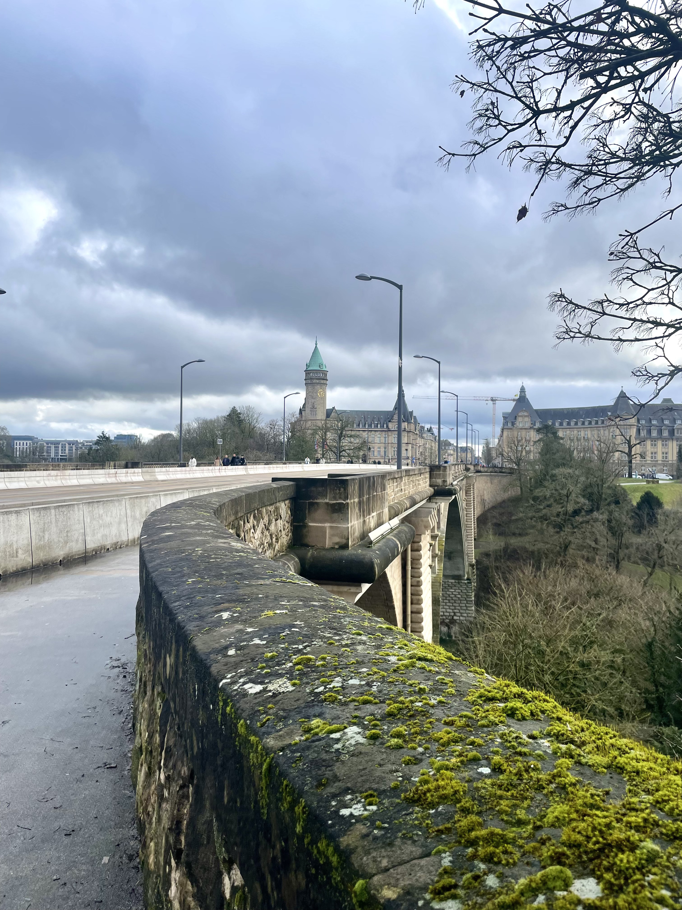
LA PASSERELLE
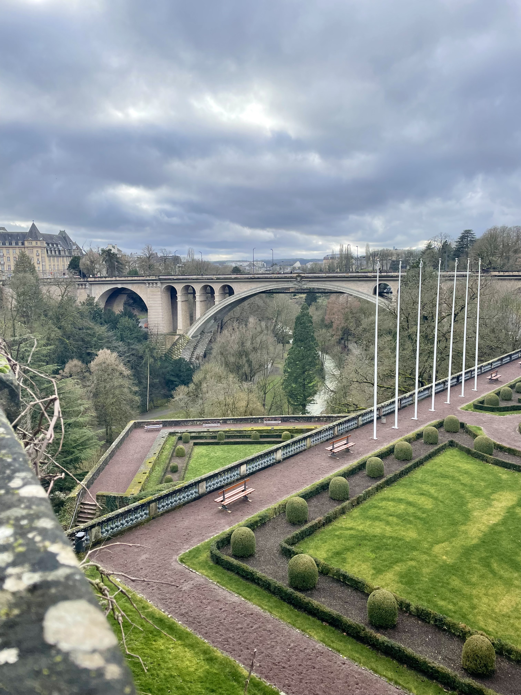
CORPS DES VOLONTAIRES DE L'ARMEE
MONUMENTO DEL RECUERDO
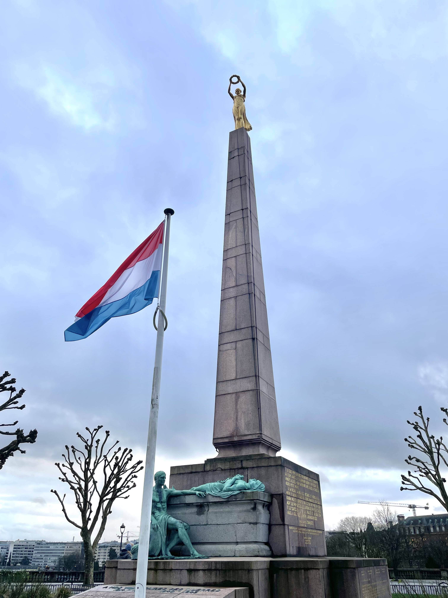
CATEDRAL DE SANTA MARIA
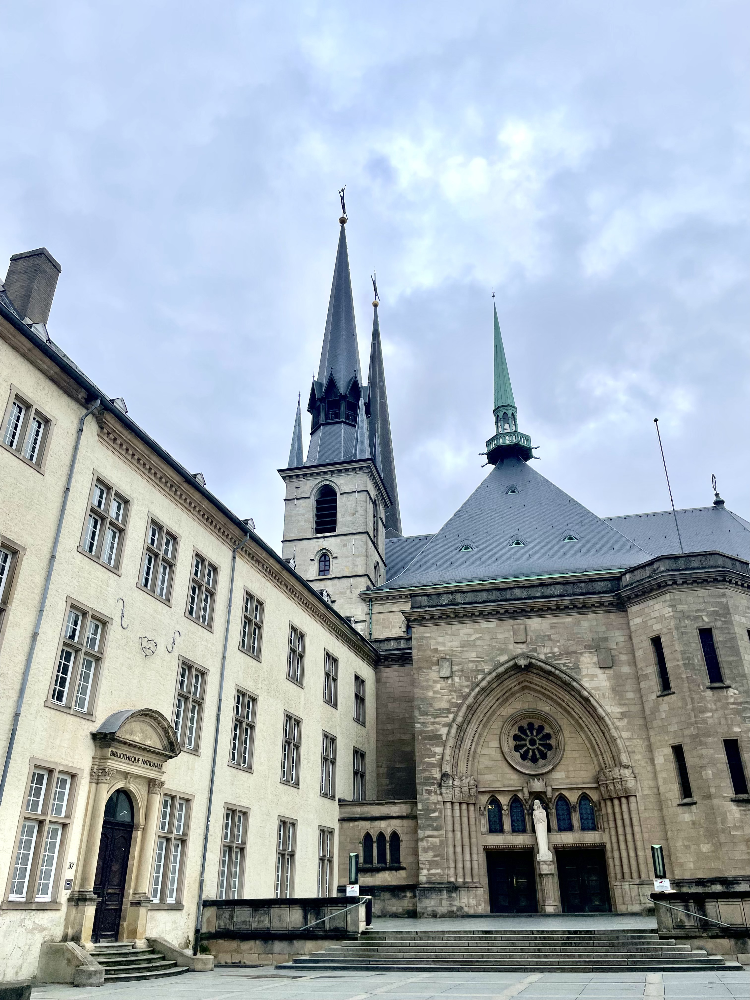
PALACIO GRAND DUCAL
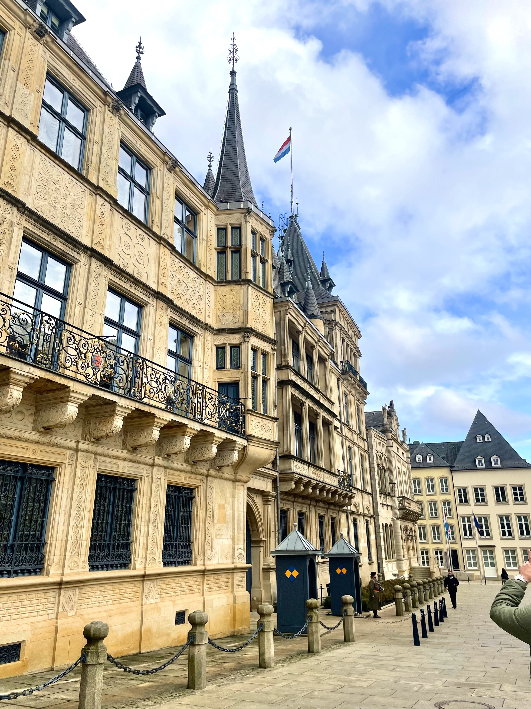
CHEMIN DE LA CORNICHE
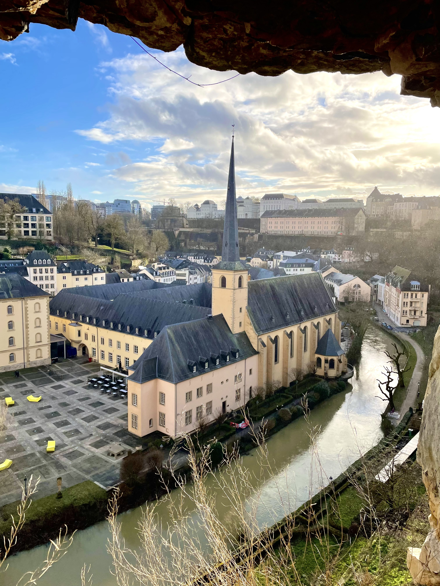
CALLES
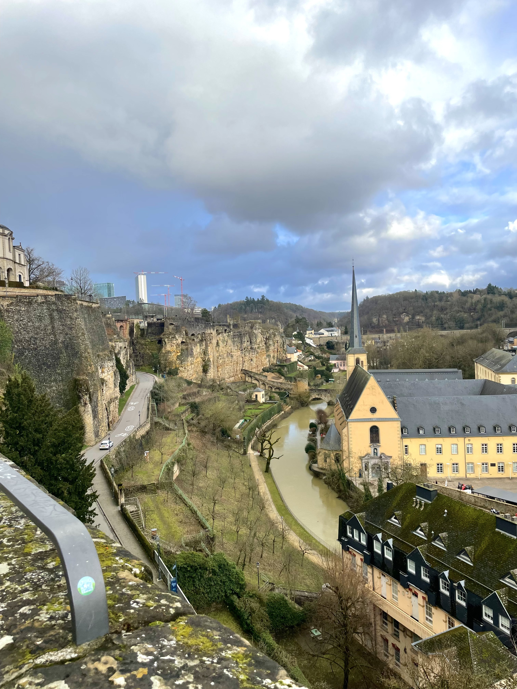
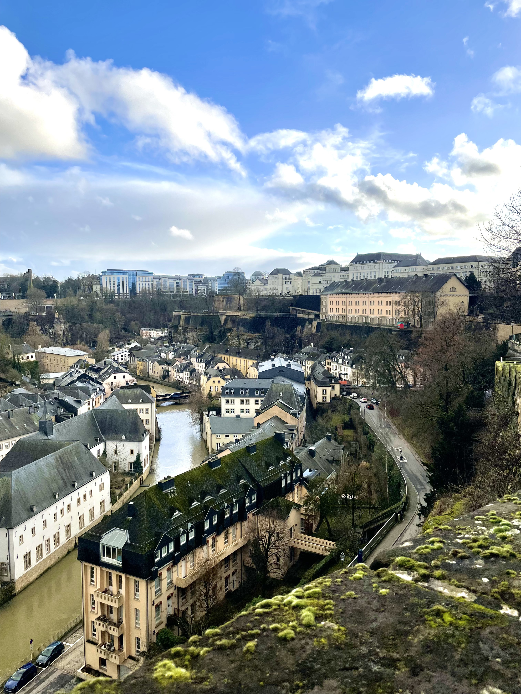
ESCULTURAS
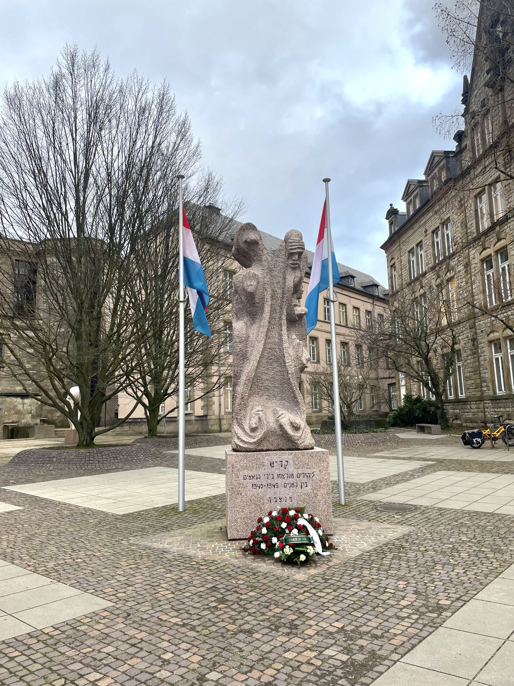
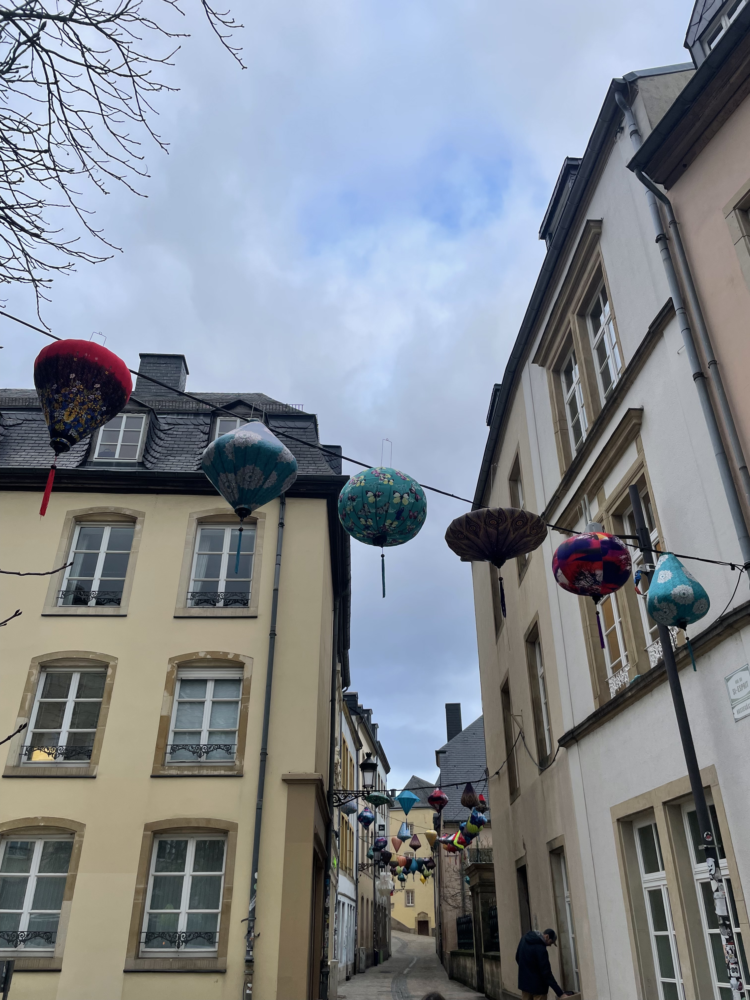
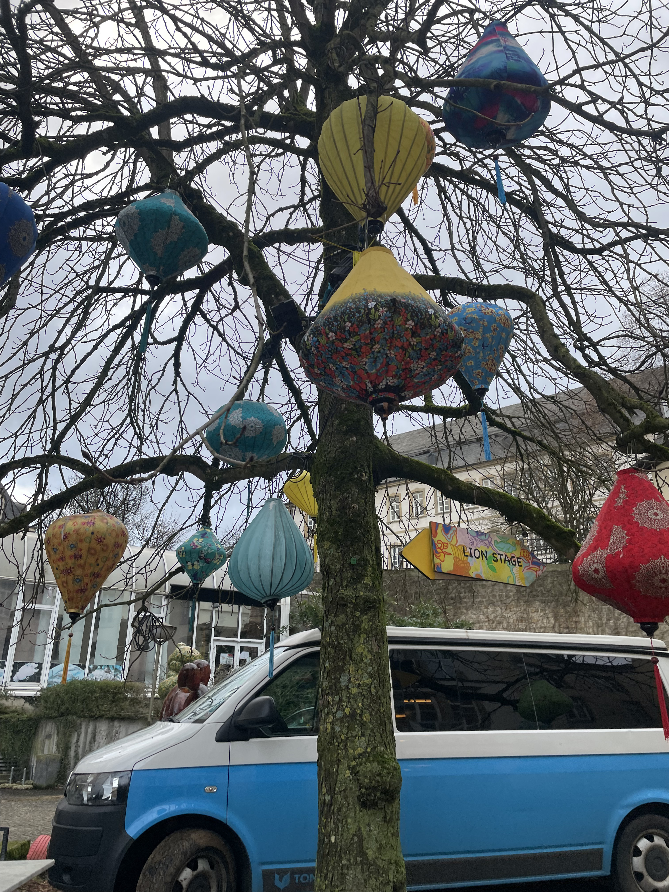